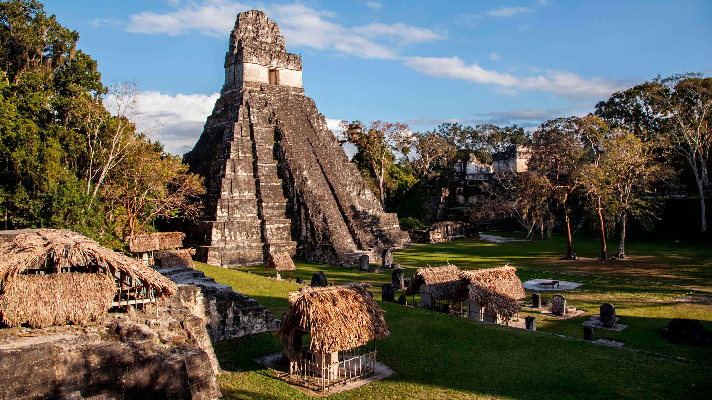

Top 5 World Destinations
Guatemala City , locally known as Guatemala or Guate, officially Ciudad de Guatemala (art. 231 of the Political Constitution of the Republic of Guatemala),[5] is the capital and largest city of Guatemala,[6] and the most populous urban area in Central America. The city is located in the south-central part of the country, nestled in a mountain valley called Valle de la Ermita (English: Hermitage Valley). It is estimated that its population is about 1 million. Guatemala City is also the capital of the Municipality of Guatemala and of the Guatemala Department.
